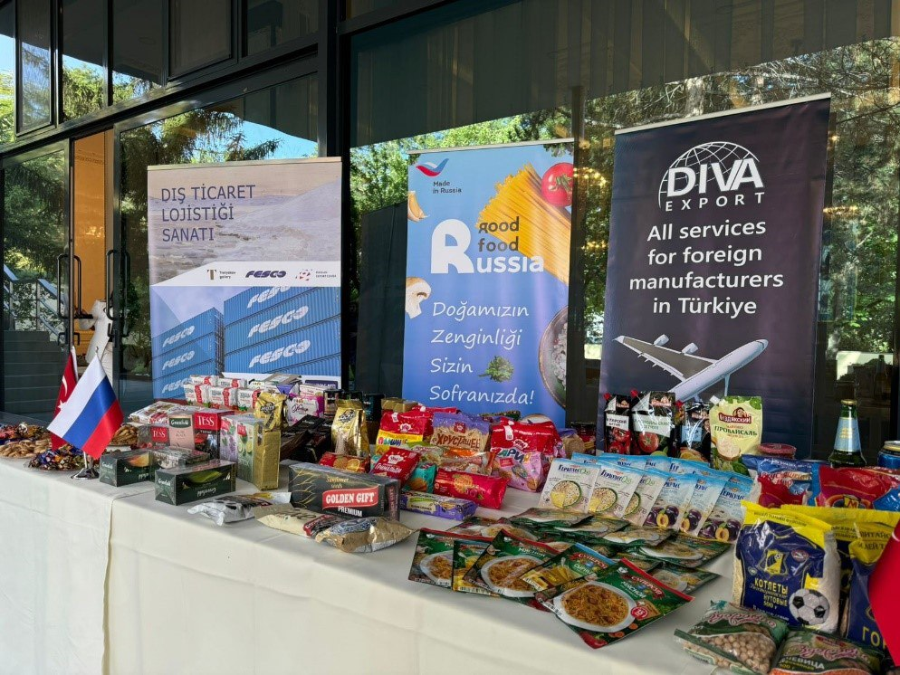

Почему средний срок партнёрства важнее громкого обещания

В маркетинге сложных продуктов результат редко появляется за одну кампанию. Устойчивость возникает, когда команда понимает контекст, накапливает данные и отвечает за следующий шаг.
- Средний срок сотрудничества Digital Clever с клиентом — 2+ года.
- За это время стратегия, контент, реклама и SEO работают как одна система.
- Поэтому мы работаем как единая внешняя маркетинговая команда бренда.
Договоритесь о способе принятия решений
В начале работы определите цель, роли команды, порядок согласований и доступные данные. Регулярный обзор результатов должен заканчиваться решением: что сохраняем, что меняем и какой вопрос проверяем следующим.
Сохраняйте знания внутри проекта
История тестов, визуальные правила и результаты кампаний помогают не начинать заново каждый месяц. Сильное партнёрство делает маркетинг последовательным, но не отменяет пересмотр гипотез и приоритетов.
Смотреть связанный кейс ↗